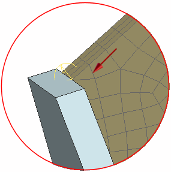
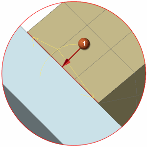
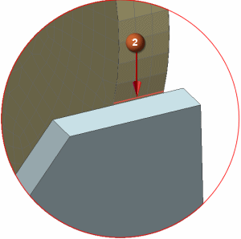
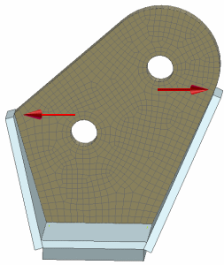

Merge faces
Examine the mesh. Notice that there appear to be some triangles in the mesh, even though you selected the Zero Triangles option.
The triangular elements in the swept mesh are actually highly distorted hexagonal elements caused by sliver faces near the edges of the meshed component.

Merge the faces on both sides of the assembly to remove the small slivers at the edges.
 Merge Face (Polygon Geometry group )
Merge Face (Polygon Geometry group )
-



Caution
Select the edges of the meshed component, not the side component. Zoom in to see the edges more clearly.
-
Apply
-


-
OK
In the Simulation Navigator, the status for the FEM is Update Pending.
-
 Update (Context group)
Update (Context group)
The component mesh is regenerated. The elements at the corners do not appear triangular any more.

 Save (Quick Access toolbar)
Save (Quick Access toolbar)